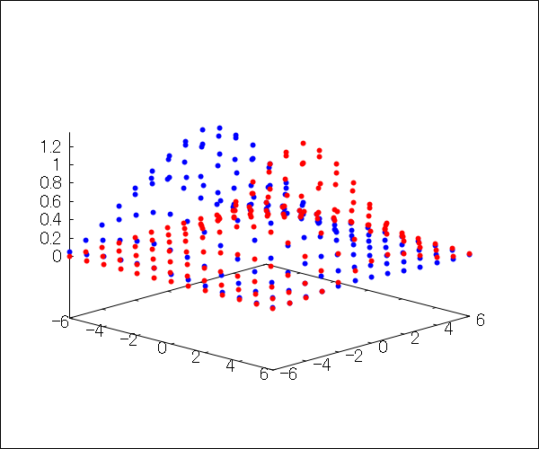
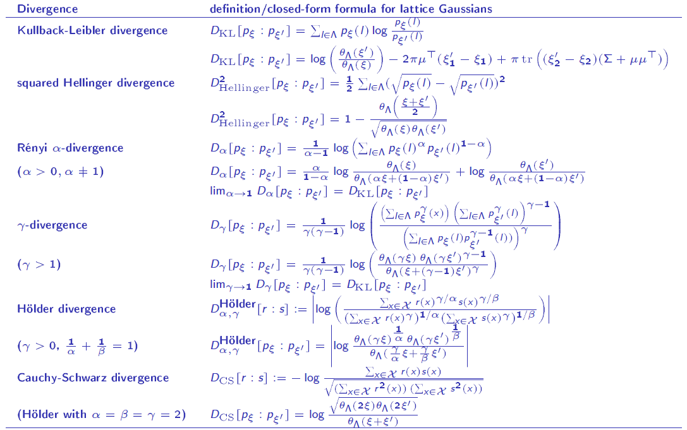

Lattice Gaussian distributions
Statistical divergences

Working paper:
On the Kullback-Leibler divergence between discrete normal distributions
Presentation:
Slides

Last updated, 18th October 2021